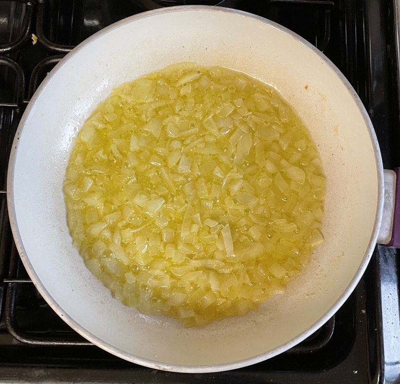

Tomato sauce
- Heat over medium-heat heat till foaming subsides
- 2 tbsp olive oil
- 2 tbsp butter
- Add and cook for 8 mins, stirring frequently
- Add and cook for 2 min
- 2 cloves garlic grated
- ¼ chilli flakes
- 1 anchovy chopped (optional)
- Add and simmer for 30 mins (or slow cooker for 2-3 hours)
- 2 tins tomatoes
- 1 tsp oregano
- ½ tsp basil
- 1 stem fresh basil chopped (leaves reserved for garnish)
- ½ tsp sugar
- ¼ salt
- Season to taste
- Blitz half to smoothen
- Stir in while hot
Serving
Notes
- Will taste fishy if use anchovy
Pics
